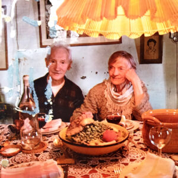

LA CUISINE PALÉOLITHIQUE DE JOSEPH DELTEIL. SOPA DE HABAS
Ingredientes
- 1 cebolla mediana, picada
- 2-3 hojas de lechuga verdes en juliana muy fina
- 2-3 cucharadas de aceite de oliva virgen extra
- 1 k - 1 k y 1/2 de habas frescas
- 2 nabos tiernos
- 2 puerros, lo blanco, tiernos
- 2 zanahorias tiernas
- 2 ramitas de apio
- 2 chuletas o 6 costillas de confit de cerdo o2 piezas de oca o pato
- Sal, pimienta
- Si se quiere, 1 ramita de salvia y otra de tomillo
- Sal y pimienta


En estos tiempos en los que se habla de la vuelta a los orígenes, al territorio, a los productos naturales, a la cocina casera, la de las abuelas, no está nada mal recordar el libro del escritor surrealista francés Joseph Delteil (1894-1978) «La cuisine paléolitique» (1964, Robert Morel). Creo que viene muy a propósito. Delteil vivía en París como escritor y poeta siempre controvertido pero muy conocido desde su juventud. En el periodo de entre guerras conoció a Caroline Dudley Reagan, estadounidense creadora de la «Revue Nègre», que convertiría a la entonces desconocida en Europa Joséphine Baker, con la que viajó a Francia en los años 20′, en una estrella incontestable de París y del país galo. Decidieron pasar juntos el resto de sus vidas y acabaron instalados en 1937 en una propiedad cercana a Montpellier, La Tuilerie de Massane, donde cambiaron su vida parisina por otra campestre.
Muy a principios de los años 70′ en una revista del sector les hicieron una entrevista para que explicaran su idea de esta cocina paleolítica y desgranaran algunas de sus fórmulas culinarias, ya que el libro no es el clásico de recetas, además de unas cuantas pistas de sus ideas de vida y de cocina.
En aquella época, joven estudiante de otras materias pero aficionada a la cocina, ávida de aprender cualquier asunto relacionado con temas culinarios, yo cocinaba siempre que podía, leía, leía, leía a los maestros y recortaba los artículos y entrevistas de prensa especializada que me parecían interesantes, como esta. Pegaba las fotos y las recetas en una carpeta de anillas tras otra –no había entonces otra forma– e iba archivando toda esta documentación, que me ha resultado más tarde de gran utilidad. Al pobre Delteil le pegué encima una receta, creo que el saupiquet , y por eso tiene restos de la cola –la juventud siempre es osada–. Pero se le ve bastante bien la cara. De felicidad, por cierto.
Sobre la mesa de la foto superior y ante la pareja están una serie de platos y La Soupe aux Fèves, cuya receta figura a continuación,
con un punto muy interesante: Esta sopa, como dice Delteil, es «une seule en trois personnes», en un comentario tan provocador como era su literatura: Se puede hacer en primavera con habas, en pleno verano, con judías verdes y, en invierno, con repollo rizado, o, digo yo, berza blanca, allí donde haya mercados en los que se encuentre esta maravilla de la huerta. Esto sí que es cocina de temporada de verdad. Al plato ancestral, Delteil añade por cada comensal 1 puerro, 1 zanahoria, 1 nabo y una ramita de apio, que en verano completa con un tomate, que yo no voy a meter en mis habas. No me apetece, no pinta nada.
No me siento tan paleolítica, me gustaría poder ser bastante más paleolítica de lo que soy, pero lo encuentro difícil. Por lo tanto he decidido cambiar este procedimiento que indica Delteil de hervir las verduras en agua –las habas endurecerían su calzón como cuero– en una olla de barro, le toupin, y añadir casi al final una o dos piezas de cerdo confitado, porque «la fève adore le porc», «el haba adora el cerdo», dice Delteil. Se puede hacer, por el contrario, con confit de oca o pato. Yo he perfumado mi plato con un poco de salvia –¡el cerdo, esto lo digo yo, adora la salvia!– porque va genial con todos estos ingredientes, también con las habas, y un poco de tomillo.
Me remito para mi receta a la costumbre vasca –que no será paleolítica, pero sí ancestral– de mi madre de sofreír lechuga romana u oreja de burro –si es posible las hojas más verdes y duras, con más savia blanca, pero tersas y frescas– y un poco de cebolla en una olla de barro y con un poco de aceite o manteca de cerdo antes de añadir las habas y, poco después, las demás verduras, para que se cocinen en su jugo, a fuego manso, sin tener que añadir agua. Los jugos de la lechuga ablandan en la olla el calzón de las habas o de los guisantes o las otras leguminosas frescas –porque en cuisine paléolithique no se repelan las habas del calzón, claro que no, como se hace en la cocina moderna más civilizada para dejar solo los cotiledones– y une su punto un poco amargo al de las leguminosas que, a su vez, también tienen un ligero dulzor. A media cocción se añade el confit de cerdo y se baja el fuego aún más, hasta que todo esté tierno. El tiempo depende, como siempre de lo tiernas que sean las verduras.
El reportaje a la pareja también incluye, entre otras, la receta de La poule au pot de los domingos, que adjunto a continuación para el que quiera aprovechar la información y adaptarla a sus gustos y costumbres. Las yemas del interior de la gallina se pueden sustituir por 1 yema de huevo y aprovechar la clara para otra cosa.
Además de aclarar que el hecho de que su cocina fuera paleolítica no quería decir que fuera pobre, de tiempos míseros, sino natural, Delteil y Caroline también ofrecían para demostrarlo la forma de hacer la tortilla de trufa, siempre un lujo
y afirmaban que la proporción es 1 huevo, una trufa, 1 huevo, una trufa …
Vamos a la receta de la soupe aux féves, con cantidades para 2.
Mi interpretación de la soupe aux fèves de Caroline Dudley y Joseph Delteil
Pelar las habas de las vainas y reservar. Calentar la grasa en la olla de barro o cazuela que se vaya a utilizar y sofreír la cebolla durante 3 minutos, añadir la lechuga y seguir sofriendo hasta que esté mustia, no seca, y echar en la olla las habas. Salpimentar un poco, añadir las ramitas de salvia y tomillo, si se quiere, y bajar el fuego al mínimo. La cebolla, la lechuga y las propias habas y resto de verduras suelen suministrar suficiente líquido de cocción si la olla es del tamaño adecuado para que las verduras no están repartidas en el fondo como en una plaza de toros.
Al cabo de 10 minutos meter en la olla las verduras limpias, peladas y cortadas al medio las más gruesas, nabos, puerros, zanahorias y apio. El confit de cerdo, chuleta y / o costillas, bien limpio del exceso de grasa, se añadirá tras otros 20 minutos de cocción, es decir al cabo de unos 30 minutos en total –depende de la suavidad de las habas–. En un rato el plato estará en su punto.